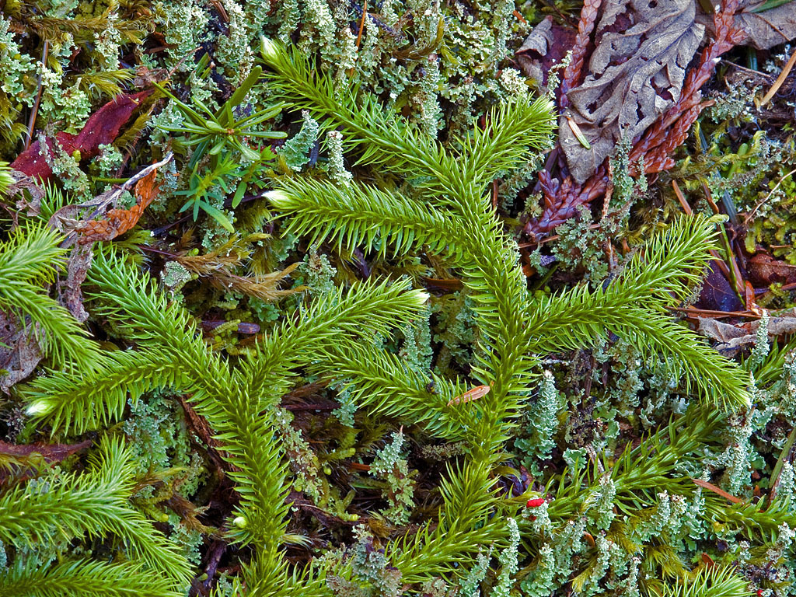
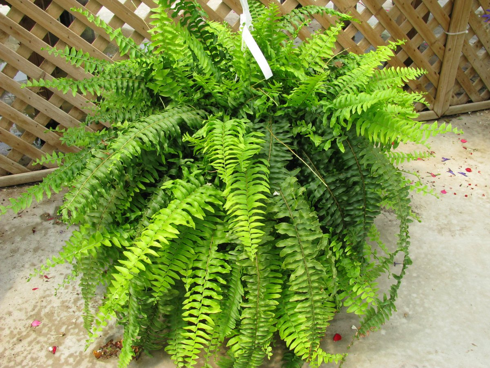

Растения
Биологическое царство, одна из основных групп многоклеточных организмов, отличительной чертой представителей которой является способность к фотосинтезу, и включающая в себя мхи, папоротники, хвощи, плауны, голосеменные и цветковые растения.

Покрытосеменные, или Цветковые, — отдел высших семенных растений, по числу видов превосходящий другие отделы высших растений. На сегодняшний день описано более 300 тыс. видов цветковых, но учёные полагают, что общее число видов этой группы растений составляет приблизительно 350 тыс.

Плауновидные — отдел высших споровых растений, насчитывающий около 1 300 видов. В России встречаются 25 видов, самый распространённый вид — плаун булавовидный.

Папоротникови́дные, или па́поротники (лат. Polypodióphyta), — отдел сосудистых растений, в который входят как современные папоротники, так и одни из древнейших высших растений, появившихся около 405 млн лет назад в девонском периоде палеозойской эры. Гигантские растения из группы древовидных папоротников во многом определяли облик планеты в конце палеозойской — начале мезозойской эры. Современные папоротники — одни из немногих древнейших растений, сохранивших значительное разнообразие, сопоставимое с тем, что было в прошлом. Папоротники сильно различаются по размерам, жизненным формам, жизненным циклам, особенностям строения и другим особенностям. Внешний облик их настолько выделяется среди всех растений, что люди обычно называют все их одинаково — «папоротники» —, не подозревая, что это большая группа сосудистых растений: существует 48 семейств, 587 родов и 10 620 видов папоротниковидных.